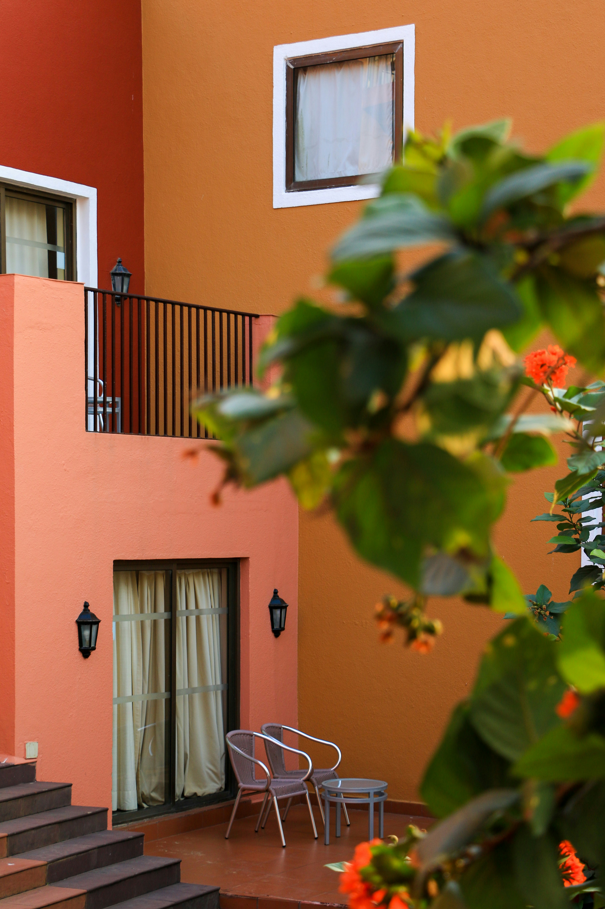

Reservations
Resturent for You accepts reservation up to two months in advance to the calender date.
To reserve a table,please call
03187105589
Online reservatios are 30 days in advance only.
Make an Online reservation through opentable
We do not take reservation via email.
Hours Of Operation
Lunch
Mon-Fri 11:30am to 2:30pm
Dinner
Monday-Sunday 5:00pm - 10:00pm
Corkage
$30 per 750ml bottle for up to 2 bottles, $50 per additional bottles

Directions
Click
Here For Mobile Map
From North Bay:
- Take 280 NORTH to SAN FRANCISCO
- GET in LEFT LANE as you see the San Francisco cityscape
- LEFT off the ramp on to KING DRIVE
- Continue straight past PAC BELL PARK
- You are now on EMBARCADERO
- Pass under the Bay Bridge and past the FERRY PLAZA BUILDING.
- Turn LEFT on BROADWAY at stop light.
- Turn LEFT on BATTERY ST.
- Turn LEFT on JACKSON ST.
- KOKKARI is at the corner of JACKSON ST. & FRONT ST.
From South Bay:
- Take 280 NORTH to SAN FRANCISCO
- GET in LEFT LANE as you see the San Francisco cityscape
- LEFT off the ramp on to KING DRIVE
- Continue straight past PAC BELL PARK
- You are now on EMBARCADERO
- Pass under the Bay Bridge and past the FERRY PLAZA BUILDING.
- Turn LEFT on BROADWAY at stop light.
- Turn LEFT on BATTERY ST.
- Turn LEFT on JACKSON ST.
- KOKKARI is at the corner of JACKSON ST. & FRONT ST.